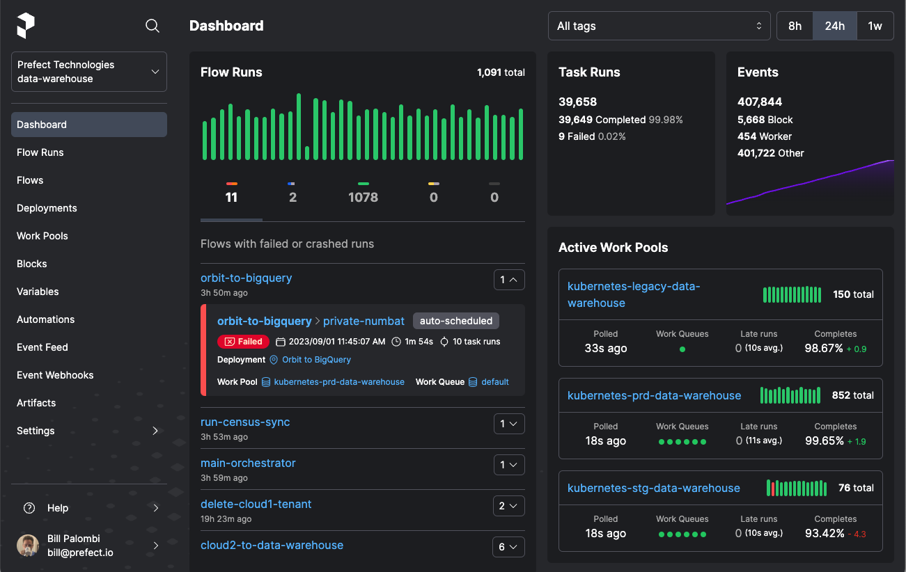

SEASONS = [
'1213',
'1314',
'1516',
'1617',
'1718',
'1819',
'1920',
'2021',
'2122',
'2223',
]
LEAGUES_MAPPING = {
'E0': 'English',
'SC0': 'Scotish',
'D1': 'German',
'I1': 'Italian',
'SP1': 'Spanish',
'F1': 'French',
'N1': 'Dutch',
'B1': 'Belgian',
'P1': 'Portuguese',
'T1': 'Turkish',
'G1': 'Greek',
}
Introduction
Prefect is a workflow orchestration tool. It makes accessible the creation, scheduling, and monitoring of complex data pipelines. The workflows are defined as Python code, while Prefect provides error handling, retry mechanisms, and a user-friendly dashboard for monitoring. Prefect is based on the following concepts:
- Tasks: Functions that represent a discrete unit of work in a Prefect workflow.
- Flows: Containers for workflow logic and allow users to interact with and reason about the state of their workflows.
- Results: They represent the data returned by a flow or a task.
- Artifacts: They are formatted outputs rendered in the Prefect UI, such as markdown, tables, or links.
- States: They represent the status of a particular task run or flow run.
- Task Runners: They allow selecting specific executors for Prefect tasks, such as concurrent, parallel, or distributed execution of tasks.
- Runtime Context: It provides information about the current flow or task run that you can refer to in your code.
- Profiles and Configuration: They are settings that can be used to interact with Prefect Cloud and a Prefect server.
- Blocks: Prefect primitives that enable the storage of configuration and provide a UI interface.
- Variables: They are named, mutable string values, much like environment variables.
- Deployments: They are server-side concepts that encapsulate flows, allowing them to be scheduled and triggered via API.
- Deployment Management: A set of files that describe how to prepare one or more flow deployments.
- Work Pools, Workers & Agents : They bridge the Prefect orchestration environment with the execution environment.
- Storage: It configures how flow code for deployments is persisted and retrieved by Prefect agents.
- Filesystems: They are blocks that allow to read and write data from paths.
- Infrastructure: They are blocks that specify infrastructure for flow runs created by the deployment.
- Schedules : They define how to create new flow runs automatically on a specified cadence.
- Logging: They log useful information about flows and tasks runs on the server.
Extracting the URLs
The goal is to create a data workflow that downloads soccer data from Football-Data.co.uk. The URL of each of those main leagues has the form 'https://www.football-data.co.uk/mmz4281/{season}/{league_id}.csv' where season is the season of the league and league_id is the league ID. Let’s define a few of those seasons and leagues:
We can use the above seasons and leagues to construct a mapping of (URL, league name and season) pairs:
URLS_MAPPING = {
f'https://www.football-data.co.uk/mmz4281/{season}/{league_id}.csv': (
league,
'-'.join([season[0:2], season[2:]]),
)
for season in SEASONS
for league_id, league in LEAGUES_MAPPING.items()
}
URLS_MAPPING{'https://www.football-data.co.uk/mmz4281/1213/E0.csv': ('English', '12-13'),
'https://www.football-data.co.uk/mmz4281/1213/SC0.csv': ('Scotish', '12-13'),
'https://www.football-data.co.uk/mmz4281/1213/D1.csv': ('German', '12-13'),
'https://www.football-data.co.uk/mmz4281/1213/I1.csv': ('Italian', '12-13'),
'https://www.football-data.co.uk/mmz4281/1213/SP1.csv': ('Spanish', '12-13'),
'https://www.football-data.co.uk/mmz4281/1213/F1.csv': ('French', '12-13'),
'https://www.football-data.co.uk/mmz4281/1213/N1.csv': ('Dutch', '12-13'),
'https://www.football-data.co.uk/mmz4281/1213/B1.csv': ('Belgian', '12-13'),
'https://www.football-data.co.uk/mmz4281/1213/P1.csv': ('Portuguese',
'12-13'),
'https://www.football-data.co.uk/mmz4281/1213/T1.csv': ('Turkish', '12-13'),
'https://www.football-data.co.uk/mmz4281/1213/G1.csv': ('Greek', '12-13'),
'https://www.football-data.co.uk/mmz4281/1314/E0.csv': ('English', '13-14'),
'https://www.football-data.co.uk/mmz4281/1314/SC0.csv': ('Scotish', '13-14'),
'https://www.football-data.co.uk/mmz4281/1314/D1.csv': ('German', '13-14'),
'https://www.football-data.co.uk/mmz4281/1314/I1.csv': ('Italian', '13-14'),
'https://www.football-data.co.uk/mmz4281/1314/SP1.csv': ('Spanish', '13-14'),
'https://www.football-data.co.uk/mmz4281/1314/F1.csv': ('French', '13-14'),
'https://www.football-data.co.uk/mmz4281/1314/N1.csv': ('Dutch', '13-14'),
'https://www.football-data.co.uk/mmz4281/1314/B1.csv': ('Belgian', '13-14'),
'https://www.football-data.co.uk/mmz4281/1314/P1.csv': ('Portuguese',
'13-14'),
'https://www.football-data.co.uk/mmz4281/1314/T1.csv': ('Turkish', '13-14'),
'https://www.football-data.co.uk/mmz4281/1314/G1.csv': ('Greek', '13-14'),
'https://www.football-data.co.uk/mmz4281/1516/E0.csv': ('English', '15-16'),
'https://www.football-data.co.uk/mmz4281/1516/SC0.csv': ('Scotish', '15-16'),
'https://www.football-data.co.uk/mmz4281/1516/D1.csv': ('German', '15-16'),
'https://www.football-data.co.uk/mmz4281/1516/I1.csv': ('Italian', '15-16'),
'https://www.football-data.co.uk/mmz4281/1516/SP1.csv': ('Spanish', '15-16'),
'https://www.football-data.co.uk/mmz4281/1516/F1.csv': ('French', '15-16'),
'https://www.football-data.co.uk/mmz4281/1516/N1.csv': ('Dutch', '15-16'),
'https://www.football-data.co.uk/mmz4281/1516/B1.csv': ('Belgian', '15-16'),
'https://www.football-data.co.uk/mmz4281/1516/P1.csv': ('Portuguese',
'15-16'),
'https://www.football-data.co.uk/mmz4281/1516/T1.csv': ('Turkish', '15-16'),
'https://www.football-data.co.uk/mmz4281/1516/G1.csv': ('Greek', '15-16'),
'https://www.football-data.co.uk/mmz4281/1617/E0.csv': ('English', '16-17'),
'https://www.football-data.co.uk/mmz4281/1617/SC0.csv': ('Scotish', '16-17'),
'https://www.football-data.co.uk/mmz4281/1617/D1.csv': ('German', '16-17'),
'https://www.football-data.co.uk/mmz4281/1617/I1.csv': ('Italian', '16-17'),
'https://www.football-data.co.uk/mmz4281/1617/SP1.csv': ('Spanish', '16-17'),
'https://www.football-data.co.uk/mmz4281/1617/F1.csv': ('French', '16-17'),
'https://www.football-data.co.uk/mmz4281/1617/N1.csv': ('Dutch', '16-17'),
'https://www.football-data.co.uk/mmz4281/1617/B1.csv': ('Belgian', '16-17'),
'https://www.football-data.co.uk/mmz4281/1617/P1.csv': ('Portuguese',
'16-17'),
'https://www.football-data.co.uk/mmz4281/1617/T1.csv': ('Turkish', '16-17'),
'https://www.football-data.co.uk/mmz4281/1617/G1.csv': ('Greek', '16-17'),
'https://www.football-data.co.uk/mmz4281/1718/E0.csv': ('English', '17-18'),
'https://www.football-data.co.uk/mmz4281/1718/SC0.csv': ('Scotish', '17-18'),
'https://www.football-data.co.uk/mmz4281/1718/D1.csv': ('German', '17-18'),
'https://www.football-data.co.uk/mmz4281/1718/I1.csv': ('Italian', '17-18'),
'https://www.football-data.co.uk/mmz4281/1718/SP1.csv': ('Spanish', '17-18'),
'https://www.football-data.co.uk/mmz4281/1718/F1.csv': ('French', '17-18'),
'https://www.football-data.co.uk/mmz4281/1718/N1.csv': ('Dutch', '17-18'),
'https://www.football-data.co.uk/mmz4281/1718/B1.csv': ('Belgian', '17-18'),
'https://www.football-data.co.uk/mmz4281/1718/P1.csv': ('Portuguese',
'17-18'),
'https://www.football-data.co.uk/mmz4281/1718/T1.csv': ('Turkish', '17-18'),
'https://www.football-data.co.uk/mmz4281/1718/G1.csv': ('Greek', '17-18'),
'https://www.football-data.co.uk/mmz4281/1819/E0.csv': ('English', '18-19'),
'https://www.football-data.co.uk/mmz4281/1819/SC0.csv': ('Scotish', '18-19'),
'https://www.football-data.co.uk/mmz4281/1819/D1.csv': ('German', '18-19'),
'https://www.football-data.co.uk/mmz4281/1819/I1.csv': ('Italian', '18-19'),
'https://www.football-data.co.uk/mmz4281/1819/SP1.csv': ('Spanish', '18-19'),
'https://www.football-data.co.uk/mmz4281/1819/F1.csv': ('French', '18-19'),
'https://www.football-data.co.uk/mmz4281/1819/N1.csv': ('Dutch', '18-19'),
'https://www.football-data.co.uk/mmz4281/1819/B1.csv': ('Belgian', '18-19'),
'https://www.football-data.co.uk/mmz4281/1819/P1.csv': ('Portuguese',
'18-19'),
'https://www.football-data.co.uk/mmz4281/1819/T1.csv': ('Turkish', '18-19'),
'https://www.football-data.co.uk/mmz4281/1819/G1.csv': ('Greek', '18-19'),
'https://www.football-data.co.uk/mmz4281/1920/E0.csv': ('English', '19-20'),
'https://www.football-data.co.uk/mmz4281/1920/SC0.csv': ('Scotish', '19-20'),
'https://www.football-data.co.uk/mmz4281/1920/D1.csv': ('German', '19-20'),
'https://www.football-data.co.uk/mmz4281/1920/I1.csv': ('Italian', '19-20'),
'https://www.football-data.co.uk/mmz4281/1920/SP1.csv': ('Spanish', '19-20'),
'https://www.football-data.co.uk/mmz4281/1920/F1.csv': ('French', '19-20'),
'https://www.football-data.co.uk/mmz4281/1920/N1.csv': ('Dutch', '19-20'),
'https://www.football-data.co.uk/mmz4281/1920/B1.csv': ('Belgian', '19-20'),
'https://www.football-data.co.uk/mmz4281/1920/P1.csv': ('Portuguese',
'19-20'),
'https://www.football-data.co.uk/mmz4281/1920/T1.csv': ('Turkish', '19-20'),
'https://www.football-data.co.uk/mmz4281/1920/G1.csv': ('Greek', '19-20'),
'https://www.football-data.co.uk/mmz4281/2021/E0.csv': ('English', '20-21'),
'https://www.football-data.co.uk/mmz4281/2021/SC0.csv': ('Scotish', '20-21'),
'https://www.football-data.co.uk/mmz4281/2021/D1.csv': ('German', '20-21'),
'https://www.football-data.co.uk/mmz4281/2021/I1.csv': ('Italian', '20-21'),
'https://www.football-data.co.uk/mmz4281/2021/SP1.csv': ('Spanish', '20-21'),
'https://www.football-data.co.uk/mmz4281/2021/F1.csv': ('French', '20-21'),
'https://www.football-data.co.uk/mmz4281/2021/N1.csv': ('Dutch', '20-21'),
'https://www.football-data.co.uk/mmz4281/2021/B1.csv': ('Belgian', '20-21'),
'https://www.football-data.co.uk/mmz4281/2021/P1.csv': ('Portuguese',
'20-21'),
'https://www.football-data.co.uk/mmz4281/2021/T1.csv': ('Turkish', '20-21'),
'https://www.football-data.co.uk/mmz4281/2021/G1.csv': ('Greek', '20-21'),
'https://www.football-data.co.uk/mmz4281/2122/E0.csv': ('English', '21-22'),
'https://www.football-data.co.uk/mmz4281/2122/SC0.csv': ('Scotish', '21-22'),
'https://www.football-data.co.uk/mmz4281/2122/D1.csv': ('German', '21-22'),
'https://www.football-data.co.uk/mmz4281/2122/I1.csv': ('Italian', '21-22'),
'https://www.football-data.co.uk/mmz4281/2122/SP1.csv': ('Spanish', '21-22'),
'https://www.football-data.co.uk/mmz4281/2122/F1.csv': ('French', '21-22'),
'https://www.football-data.co.uk/mmz4281/2122/N1.csv': ('Dutch', '21-22'),
'https://www.football-data.co.uk/mmz4281/2122/B1.csv': ('Belgian', '21-22'),
'https://www.football-data.co.uk/mmz4281/2122/P1.csv': ('Portuguese',
'21-22'),
'https://www.football-data.co.uk/mmz4281/2122/T1.csv': ('Turkish', '21-22'),
'https://www.football-data.co.uk/mmz4281/2122/G1.csv': ('Greek', '21-22'),
'https://www.football-data.co.uk/mmz4281/2223/E0.csv': ('English', '22-23'),
'https://www.football-data.co.uk/mmz4281/2223/SC0.csv': ('Scotish', '22-23'),
'https://www.football-data.co.uk/mmz4281/2223/D1.csv': ('German', '22-23'),
'https://www.football-data.co.uk/mmz4281/2223/I1.csv': ('Italian', '22-23'),
'https://www.football-data.co.uk/mmz4281/2223/SP1.csv': ('Spanish', '22-23'),
'https://www.football-data.co.uk/mmz4281/2223/F1.csv': ('French', '22-23'),
'https://www.football-data.co.uk/mmz4281/2223/N1.csv': ('Dutch', '22-23'),
'https://www.football-data.co.uk/mmz4281/2223/B1.csv': ('Belgian', '22-23'),
'https://www.football-data.co.uk/mmz4281/2223/P1.csv': ('Portuguese',
'22-23'),
'https://www.football-data.co.uk/mmz4281/2223/T1.csv': ('Turkish', '22-23'),
'https://www.football-data.co.uk/mmz4281/2223/G1.csv': ('Greek', '22-23')}We will use the above URLs to download and extract the data into a single dataframe. Additionally, the following imports will be required:
from time import time
import httpx
import asyncio
import pandas as pd
from io import StringIO
from prefect import flow
from prefect import task
from prefect.logging import get_run_logger
from prefect.task_runners import ConcurrentTaskRunnerJust Python functions
The simplest approach to implement the data workflow is not to use Prefect and rely on Python functions. Let’s start by defining the three following functions:
def request_csv_data(client, url, **kwargs):
response = client.get(url=url)
return response
def download_csvs_data(urls_mapping):
with httpx.Client() as client:
responses = [
request_csv_data(client, url)
for url, (league, season) in urls_mapping.items()
]
csvs_data = [
StringIO(str(response.content, encoding='windows-1254'))
for response in responses
]
return csvs_data
def download_data(urls_mapping):
csvs_data = download_csvs_data(urls_mapping)
data = [pd.read_csv(csv_data, encoding='windows-1254') for csv_data in csvs_data]
data = pd.concat(data, ignore_index=True)
return datarequest_csv_datawill use the parametersclientandurlof a CSV to request the data.download_csvs_datawill use the parameterurls_mappingand therequest_csv_datafunction to download all CSVs data and convert them to a list ofStringIOobjects that can be read from thepd.read_csvfunction as dataframes.download_datawill use the parameterurls_mappingand thedownload_csvs_datafunction to download all CSVs data, read them as dataframes and combine them into a single dataframe.
Let’s use the last function to run the data workflow:
data = download_data(URLS_MAPPING)
data| Div | Date | HomeTeam | AwayTeam | FTHG | FTAG | FTR | HTHG | HTAG | HTR | ... | AHCh | B365CAHH | B365CAHA | PCAHH | PCAHA | MaxCAHH | MaxCAHA | AvgCAHH | AvgCAHA | Unnamed: 105 | |
|---|---|---|---|---|---|---|---|---|---|---|---|---|---|---|---|---|---|---|---|---|---|
| 0 | E0 | 18/08/12 | Arsenal | Sunderland | 0.0 | 0.0 | D | 0.0 | 0.0 | D | ... | NaN | NaN | NaN | NaN | NaN | NaN | NaN | NaN | NaN | NaN |
| 1 | E0 | 18/08/12 | Fulham | Norwich | 5.0 | 0.0 | H | 2.0 | 0.0 | H | ... | NaN | NaN | NaN | NaN | NaN | NaN | NaN | NaN | NaN | NaN |
| 2 | E0 | 18/08/12 | Newcastle | Tottenham | 2.0 | 1.0 | H | 0.0 | 0.0 | D | ... | NaN | NaN | NaN | NaN | NaN | NaN | NaN | NaN | NaN | NaN |
| 3 | E0 | 18/08/12 | QPR | Swansea | 0.0 | 5.0 | A | 0.0 | 1.0 | A | ... | NaN | NaN | NaN | NaN | NaN | NaN | NaN | NaN | NaN | NaN |
| 4 | E0 | 18/08/12 | Reading | Stoke | 1.0 | 1.0 | D | 0.0 | 1.0 | A | ... | NaN | NaN | NaN | NaN | NaN | NaN | NaN | NaN | NaN | NaN |
| ... | ... | ... | ... | ... | ... | ... | ... | ... | ... | ... | ... | ... | ... | ... | ... | ... | ... | ... | ... | ... | ... |
| 34679 | G1 | 13/05/2023 | Ionikos | Lamia | 2.0 | 2.0 | D | 2.0 | 0.0 | H | ... | -0.50 | 2.05 | 1.80 | 2.04 | 1.72 | 2.19 | 1.87 | 2.03 | 1.76 | NaN |
| 34680 | G1 | 13/05/2023 | Levadeiakos | Giannina | 3.0 | 3.0 | D | 2.0 | 2.0 | D | ... | -0.25 | 1.82 | 2.02 | 1.85 | 2.01 | 2.04 | 2.05 | 1.86 | 1.93 | NaN |
| 34681 | G1 | 14/05/2023 | AEK | Volos NFC | 4.0 | 0.0 | H | 2.0 | 0.0 | H | ... | -3.50 | 1.93 | 1.93 | 1.92 | 1.93 | 2.05 | 1.94 | 1.91 | 1.87 | NaN |
| 34682 | G1 | 14/05/2023 | Panathinaikos | Aris | 1.0 | 1.0 | D | 1.0 | 1.0 | D | ... | -1.25 | 1.95 | 1.90 | 1.95 | 1.90 | 1.99 | 1.96 | 1.89 | 1.90 | NaN |
| 34683 | G1 | 14/05/2023 | PAOK | Olympiakos | 0.0 | 1.0 | A | 0.0 | 1.0 | A | ... | -0.50 | 1.85 | 2.00 | 1.89 | 1.96 | 1.98 | 2.05 | 1.91 | 1.88 | NaN |
34684 rows × 139 columns
The above code works perfectly fine but if you would like to have properties like scheduling, retries, logging, observability etc then you would have to implement these features from scratch.
Using task and flows
Prefect offers all the above functionality. It also uses some sensible defaults but we can further customize the data workflow. Based on the definitions of Prefect concepts, we can decorate the functions as follows:
request_csv_datarepresents a discrete unit of work and will receive thetaskdecorator.download_csvs_datacontains the above tasks and will receive theflowdecorator.download_dataimplements the full data workflow and will receive theflowdecorator.
Therefore request_csv_data represents tasks, while download_csvs_data is a subflow of the download_data flow:
@task(name='Request CSV data.', retries=5)
def request_csv_data(client: httpx.Client, url: str, **kwargs):
logger = get_run_logger()
start_time = time()
response = client.get(url=url)
logger.info(
f'CSV data, {kwargs["league"]} league and {kwargs["season"]} season, response time: {time() - start_time}s'
)
return response
@flow(name='Download synchronously CSVs data.', validate_parameters=True)
def download_csvs_data(urls_mapping: dict[str, tuple[str, str]]):
logger = get_run_logger()
start_time = time()
with httpx.Client() as client:
responses = [
request_csv_data(client, url, league=league, season=season)
for url, (league, season) in urls_mapping.items()
]
csvs_data = [
StringIO(str(response.content, encoding='windows-1254'))
for response in responses
]
logger.info(f'CSVs data download time: {time() - start_time}s')
return csvs_data
@flow(name='Download synchronously data.', validate_parameters=True)
def download_data(urls_mapping: dict[str, tuple[str, str]]):
logger = get_run_logger()
start_time = time()
csvs_data = download_csvs_data(urls_mapping)
data = [pd.read_csv(csv_data, encoding='windows-1254') for csv_data in csvs_data]
data = pd.concat(data, ignore_index=True)
logger.info(f'Data download time: {time() - start_time}s')
return dataWe run the updated flow:
data = download_data(URLS_MAPPING) data
Concurrent task runner
The above code executes the tasks in a sequence. This is not optimal for downloading a large number of files. Instead, using an asynchronous httpx client will concurrently download the data. A current limitation of Prefect is that it does not allow passing the asynchronous client from the flow to the tasks. Therefore we remove the task decorator from request_csv_data. Nevertheless, we can still log the same message with the use of the print function and the log_prints parameter of the flow decorator:
async def request_csv_data(client: httpx.AsyncClient, url: str, **kwargs):
start_time = time()
response = await client.get(url=url)
print(
f'CSV data, {kwargs["league"]} league and {kwargs["season"]} season, response time: {time() - start_time}s'
)
return response
@flow(name='Download asynchronously CSVs data.', validate_parameters=True)
async def download_csvs_data(urls_mapping: dict[str, tuple[str, str]]):
logger = get_run_logger()
start_time = time()
async with httpx.AsyncClient(limits=httpx.Limits(max_connections=30)) as client:
requests = [
request_csv_data(client, url, league=league, season=season)
for url, (league, season) in urls_mapping.items()
]
responses = await asyncio.gather(*requests)
csvs_data = [
StringIO(str(response.content, encoding='windows-1254'))
for response in responses
]
logger.info(f'CSVs data download time: {time() - start_time}s')
return csvs_data
@flow(
name='Download asynchronously the data.',
validate_parameters=True,
task_runner=ConcurrentTaskRunner(),
log_prints=True,
)
async def download_data(urls_mapping: dict[str, tuple[str, str]]):
logger = get_run_logger()
start_time = time()
csvs_data = await download_csvs_data(urls_mapping)
data = [pd.read_csv(csv_data, encoding='windows-1254') for csv_data in csvs_data]
data = pd.concat(data, ignore_index=True)
logger.info(f'Data download time: {time() - start_time}s')
return dataRunning the flow speeds up the process significantly:
data = await download_data(URLS_MAPPING)
data17:27:14.667 | INFO | prefect.engine - Created flow run 'amethyst-reindeer' for flow 'Download asynchronously the data.'
17:27:14.910 | INFO | Flow run 'amethyst-reindeer' - Created subflow run 'nebulous-wren' for flow 'Download asynchronously CSVs data.'
17:27:15.642 | INFO | Flow run 'nebulous-wren' - CSV data, Scotish league and 12-13 season, response time: 0.6336770057678223s
17:27:15.652 | INFO | Flow run 'nebulous-wren' - CSV data, Greek league and 12-13 season, response time: 0.6416089534759521s
17:27:15.660 | INFO | Flow run 'nebulous-wren' - CSV data, Belgian league and 13-14 season, response time: 0.6477789878845215s
17:27:15.727 | INFO | Flow run 'nebulous-wren' - CSV data, Belgian league and 15-16 season, response time: 0.7104108333587646s
17:27:15.751 | INFO | Flow run 'nebulous-wren' - CSV data, German league and 12-13 season, response time: 0.7429869174957275s
17:27:15.760 | INFO | Flow run 'nebulous-wren' - CSV data, Turkish league and 12-13 season, response time: 0.7498030662536621s
17:27:15.768 | INFO | Flow run 'nebulous-wren' - CSV data, Spanish league and 12-13 season, response time: 0.7591559886932373s
17:27:15.781 | INFO | Flow run 'nebulous-wren' - CSV data, Dutch league and 12-13 season, response time: 0.7717771530151367s
17:27:15.792 | INFO | Flow run 'nebulous-wren' - CSV data, Italian league and 12-13 season, response time: 0.7832348346710205s
17:27:15.818 | INFO | Flow run 'nebulous-wren' - CSV data, German league and 15-16 season, response time: 0.8035109043121338s
17:27:15.826 | INFO | Flow run 'nebulous-wren' - CSV data, German league and 13-14 season, response time: 0.8155229091644287s
17:27:15.834 | INFO | Flow run 'nebulous-wren' - CSV data, Greek league and 13-14 season, response time: 0.8216331005096436s
17:27:15.843 | INFO | Flow run 'nebulous-wren' - CSV data, Dutch league and 13-14 season, response time: 0.8309857845306396s
17:27:15.849 | INFO | Flow run 'nebulous-wren' - CSV data, Dutch league and 15-16 season, response time: 0.8328042030334473s
17:27:15.855 | INFO | Flow run 'nebulous-wren' - CSV data, Italian league and 15-16 season, response time: 0.8402910232543945s
17:27:15.862 | INFO | Flow run 'nebulous-wren' - CSV data, Portuguese league and 13-14 season, response time: 0.8501789569854736s
17:27:15.874 | INFO | Flow run 'nebulous-wren' - CSV data, French league and 13-14 season, response time: 0.8621432781219482s
17:27:15.879 | INFO | Flow run 'nebulous-wren' - CSV data, French league and 12-13 season, response time: 0.8697159290313721s
17:27:15.886 | INFO | Flow run 'nebulous-wren' - CSV data, Italian league and 13-14 season, response time: 0.874751091003418s
17:27:15.893 | INFO | Flow run 'nebulous-wren' - CSV data, English league and 12-13 season, response time: 0.8853902816772461s
17:27:15.900 | INFO | Flow run 'nebulous-wren' - CSV data, Spanish league and 15-16 season, response time: 0.8842580318450928s
17:27:15.909 | INFO | Flow run 'nebulous-wren' - CSV data, Spanish league and 13-14 season, response time: 0.897454023361206s
17:27:15.916 | INFO | Flow run 'nebulous-wren' - CSV data, French league and 15-16 season, response time: 0.8997268676757812s
17:27:15.924 | INFO | Flow run 'nebulous-wren' - CSV data, Scotish league and 13-14 season, response time: 0.912977933883667s
17:27:15.928 | INFO | Flow run 'nebulous-wren' - CSV data, Turkish league and 13-14 season, response time: 0.9161601066589355s
17:27:15.938 | INFO | Flow run 'nebulous-wren' - CSV data, English league and 15-16 season, response time: 0.9251151084899902s
17:27:15.944 | INFO | Flow run 'nebulous-wren' - CSV data, English league and 13-14 season, response time: 0.9332690238952637s
17:27:15.953 | INFO | Flow run 'nebulous-wren' - CSV data, Scotish league and 15-16 season, response time: 0.9398610591888428s
17:27:15.961 | INFO | Flow run 'nebulous-wren' - CSV data, Turkish league and 15-16 season, response time: 0.944206953048706s
17:27:15.968 | INFO | Flow run 'nebulous-wren' - CSV data, Portuguese league and 15-16 season, response time: 0.9515140056610107s
17:27:15.975 | INFO | Flow run 'nebulous-wren' - CSV data, English league and 16-17 season, response time: 0.9584231376647949s
17:27:15.981 | INFO | Flow run 'nebulous-wren' - CSV data, Scotish league and 16-17 season, response time: 0.9639420509338379s
17:27:15.987 | INFO | Flow run 'nebulous-wren' - CSV data, Greek league and 15-16 season, response time: 0.9702777862548828s
17:27:16.021 | INFO | Flow run 'nebulous-wren' - CSV data, German league and 21-22 season, response time: 0.9885902404785156s
17:27:16.025 | INFO | Flow run 'nebulous-wren' - CSV data, Italian league and 16-17 season, response time: 1.0077612400054932s
17:27:16.036 | INFO | Flow run 'nebulous-wren' - CSV data, Italian league and 21-22 season, response time: 1.0038988590240479s
17:27:16.068 | INFO | Flow run 'nebulous-wren' - CSV data, German league and 16-17 season, response time: 1.050347089767456s
17:27:16.099 | INFO | Flow run 'nebulous-wren' - CSV data, Dutch league and 16-17 season, response time: 1.081061840057373s
17:27:16.109 | INFO | Flow run 'nebulous-wren' - CSV data, Belgian league and 12-13 season, response time: 1.0996479988098145s
17:27:16.118 | INFO | Flow run 'nebulous-wren' - CSV data, French league and 21-22 season, response time: 1.0851571559906006s
17:27:16.126 | INFO | Flow run 'nebulous-wren' - CSV data, Greek league and 16-17 season, response time: 1.1075646877288818s
17:27:16.139 | INFO | Flow run 'nebulous-wren' - CSV data, Scotish league and 17-18 season, response time: 1.1196048259735107s
17:27:16.143 | INFO | Flow run 'nebulous-wren' - CSV data, Portuguese league and 16-17 season, response time: 1.1241426467895508s
17:27:16.178 | INFO | Flow run 'nebulous-wren' - CSV data, French league and 16-17 season, response time: 1.1599040031433105s
17:27:16.228 | INFO | Flow run 'nebulous-wren' - CSV data, Portuguese league and 12-13 season, response time: 1.2183952331542969s
17:27:16.277 | INFO | Flow run 'nebulous-wren' - CSV data, Spanish league and 16-17 season, response time: 1.2594189643859863s
17:27:16.451 | INFO | Flow run 'nebulous-wren' - CSV data, Turkish league and 18-19 season, response time: 1.42592191696167s
17:27:16.480 | INFO | Flow run 'nebulous-wren' - CSV data, Turkish league and 16-17 season, response time: 1.4612810611724854s
17:27:16.487 | INFO | Flow run 'nebulous-wren' - CSV data, German league and 17-18 season, response time: 1.4681837558746338s
17:27:16.550 | INFO | Flow run 'nebulous-wren' - CSV data, Scotish league and 18-19 season, response time: 1.5270898342132568s
17:27:16.575 | INFO | Flow run 'nebulous-wren' - CSV data, English league and 18-19 season, response time: 1.5525729656219482s
17:27:16.584 | INFO | Flow run 'nebulous-wren' - CSV data, French league and 17-18 season, response time: 1.564594030380249s
17:27:16.590 | INFO | Flow run 'nebulous-wren' - CSV data, Belgian league and 17-18 season, response time: 1.5696821212768555s
17:27:16.595 | INFO | Flow run 'nebulous-wren' - CSV data, Belgian league and 18-19 season, response time: 1.5704259872436523s
17:27:16.601 | INFO | Flow run 'nebulous-wren' - CSV data, Portuguese league and 18-19 season, response time: 1.5757250785827637s
17:27:16.615 | INFO | Flow run 'nebulous-wren' - CSV data, Greek league and 18-19 season, response time: 1.590122938156128s
17:27:16.624 | INFO | Flow run 'nebulous-wren' - CSV data, Portuguese league and 17-18 season, response time: 1.602999210357666s
17:27:16.631 | INFO | Flow run 'nebulous-wren' - CSV data, Dutch league and 19-20 season, response time: 1.6042449474334717s
17:27:16.636 | INFO | Flow run 'nebulous-wren' - CSV data, Italian league and 17-18 season, response time: 1.6165509223937988s
17:27:16.643 | INFO | Flow run 'nebulous-wren' - CSV data, Turkish league and 17-18 season, response time: 1.6220529079437256s
17:27:16.683 | INFO | Flow run 'nebulous-wren' - CSV data, English league and 19-20 season, response time: 1.6570820808410645s
17:27:16.688 | INFO | Flow run 'nebulous-wren' - CSV data, Belgian league and 19-20 season, response time: 1.6616299152374268s
17:27:16.694 | INFO | Flow run 'nebulous-wren' - CSV data, Belgian league and 16-17 season, response time: 1.6760220527648926s
17:27:16.699 | INFO | Flow run 'nebulous-wren' - CSV data, Dutch league and 18-19 season, response time: 1.674577236175537s
17:27:16.718 | INFO | Flow run 'nebulous-wren' - CSV data, German league and 18-19 season, response time: 1.694092035293579s
17:27:16.725 | INFO | Flow run 'nebulous-wren' - CSV data, Scotish league and 19-20 season, response time: 1.6995530128479004s
17:27:16.730 | INFO | Flow run 'nebulous-wren' - CSV data, French league and 18-19 season, response time: 1.7057158946990967s
17:27:16.743 | INFO | Flow run 'nebulous-wren' - CSV data, French league and 19-20 season, response time: 1.7170801162719727s
17:27:16.749 | INFO | Flow run 'nebulous-wren' - CSV data, Italian league and 18-19 season, response time: 1.7246227264404297s
17:27:16.751 | INFO | Flow run 'nebulous-wren' - CSV data, Spanish league and 17-18 season, response time: 1.731330156326294s
17:27:16.760 | INFO | Flow run 'nebulous-wren' - CSV data, Dutch league and 17-18 season, response time: 1.7398650646209717s
17:27:16.787 | INFO | Flow run 'nebulous-wren' - CSV data, Turkish league and 19-20 season, response time: 1.760179042816162s
17:27:16.891 | INFO | Flow run 'nebulous-wren' - CSV data, Spanish league and 18-19 season, response time: 1.867173194885254s
17:27:16.897 | INFO | Flow run 'nebulous-wren' - CSV data, English league and 17-18 season, response time: 1.8779850006103516s
17:27:17.164 | INFO | Flow run 'nebulous-wren' - CSV data, German league and 19-20 season, response time: 2.1380579471588135s
17:27:17.282 | INFO | Flow run 'nebulous-wren' - CSV data, Greek league and 17-18 season, response time: 2.2602460384368896s
17:27:17.294 | INFO | Flow run 'nebulous-wren' - CSV data, Dutch league and 20-21 season, response time: 2.2662270069122314s
17:27:17.300 | INFO | Flow run 'nebulous-wren' - CSV data, English league and 20-21 season, response time: 2.272784948348999s
17:27:17.315 | INFO | Flow run 'nebulous-wren' - CSV data, Greek league and 20-21 season, response time: 2.2854621410369873s
17:27:17.356 | INFO | Flow run 'nebulous-wren' - CSV data, French league and 22-23 season, response time: 2.3214991092681885s
17:27:17.378 | INFO | Flow run 'nebulous-wren' - CSV data, Scotish league and 20-21 season, response time: 2.35066294670105s
17:27:17.385 | INFO | Flow run 'nebulous-wren' - CSV data, Italian league and 19-20 season, response time: 2.359006881713867s
17:27:17.392 | INFO | Flow run 'nebulous-wren' - CSV data, Portuguese league and 22-23 season, response time: 2.357428789138794s
17:27:17.396 | INFO | Flow run 'nebulous-wren' - CSV data, Spanish league and 19-20 season, response time: 2.3701021671295166s
17:27:17.403 | INFO | Flow run 'nebulous-wren' - CSV data, Italian league and 20-21 season, response time: 2.375141143798828s
17:27:17.415 | INFO | Flow run 'nebulous-wren' - CSV data, Belgian league and 21-22 season, response time: 2.382357120513916s
17:27:17.428 | INFO | Flow run 'nebulous-wren' - CSV data, Belgian league and 20-21 season, response time: 2.4002697467803955s
17:27:17.457 | INFO | Flow run 'nebulous-wren' - CSV data, Dutch league and 22-23 season, response time: 2.4225428104400635s
17:27:17.473 | INFO | Flow run 'nebulous-wren' - CSV data, Scotish league and 22-23 season, response time: 2.43923020362854s
17:27:17.479 | INFO | Flow run 'nebulous-wren' - CSV data, Spanish league and 22-23 season, response time: 2.44524884223938s
17:27:17.484 | INFO | Flow run 'nebulous-wren' - CSV data, Greek league and 19-20 season, response time: 2.4569339752197266s
17:27:17.491 | INFO | Flow run 'nebulous-wren' - CSV data, Scotish league and 21-22 season, response time: 2.458601951599121s
17:27:17.527 | INFO | Flow run 'nebulous-wren' - CSV data, German league and 20-21 season, response time: 2.499450922012329s
17:27:17.543 | INFO | Flow run 'nebulous-wren' - CSV data, German league and 22-23 season, response time: 2.508971929550171s
17:27:17.576 | INFO | Flow run 'nebulous-wren' - CSV data, Belgian league and 22-23 season, response time: 2.541059970855713s
17:27:17.581 | INFO | Flow run 'nebulous-wren' - CSV data, Portuguese league and 20-21 season, response time: 2.5525267124176025s
17:27:17.625 | INFO | Flow run 'nebulous-wren' - CSV data, French league and 20-21 season, response time: 2.5975940227508545s
17:27:17.635 | INFO | Flow run 'nebulous-wren' - CSV data, English league and 22-23 season, response time: 2.60119891166687s
17:27:17.652 | INFO | Flow run 'nebulous-wren' - CSV data, Greek league and 22-23 season, response time: 2.617156982421875s
17:27:17.665 | INFO | Flow run 'nebulous-wren' - CSV data, Italian league and 22-23 season, response time: 2.630805015563965s
17:27:17.677 | INFO | Flow run 'nebulous-wren' - CSV data, Dutch league and 21-22 season, response time: 2.6438891887664795s
17:27:17.685 | INFO | Flow run 'nebulous-wren' - CSV data, Spanish league and 20-21 season, response time: 2.657824993133545s
17:27:17.703 | INFO | Flow run 'nebulous-wren' - CSV data, Turkish league and 22-23 season, response time: 2.6679699420928955s
17:27:17.720 | INFO | Flow run 'nebulous-wren' - CSV data, Greek league and 21-22 season, response time: 2.6864521503448486s
17:27:17.784 | INFO | Flow run 'nebulous-wren' - CSV data, Portuguese league and 19-20 season, response time: 2.7578470706939697s
17:27:17.833 | INFO | Flow run 'nebulous-wren' - CSV data, Turkish league and 21-22 season, response time: 2.799938917160034s
17:27:17.861 | INFO | Flow run 'nebulous-wren' - CSV data, Portuguese league and 21-22 season, response time: 2.8281331062316895s
17:27:17.989 | INFO | Flow run 'nebulous-wren' - CSV data, Spanish league and 21-22 season, response time: 2.956023693084717s
17:27:17.994 | INFO | Flow run 'nebulous-wren' - CSV data, English league and 21-22 season, response time: 2.961747884750366s
17:27:18.031 | INFO | Flow run 'nebulous-wren' - CSV data, Turkish league and 20-21 season, response time: 3.001934051513672s
17:27:18.086 | INFO | Flow run 'nebulous-wren' - CSVs data download time: 3.0944268703460693s
17:27:18.183 | INFO | Flow run 'nebulous-wren' - Finished in state Completed()
17:27:19.362 | INFO | Flow run 'amethyst-reindeer' - Data download time: 4.614122152328491s
17:27:19.406 | INFO | Flow run 'amethyst-reindeer' - Finished in state Completed()
| Div | Date | HomeTeam | AwayTeam | FTHG | FTAG | FTR | HTHG | HTAG | HTR | ... | AHCh | B365CAHH | B365CAHA | PCAHH | PCAHA | MaxCAHH | MaxCAHA | AvgCAHH | AvgCAHA | Unnamed: 105 | |
|---|---|---|---|---|---|---|---|---|---|---|---|---|---|---|---|---|---|---|---|---|---|
| 0 | E0 | 18/08/12 | Arsenal | Sunderland | 0.0 | 0.0 | D | 0.0 | 0.0 | D | ... | NaN | NaN | NaN | NaN | NaN | NaN | NaN | NaN | NaN | NaN |
| 1 | E0 | 18/08/12 | Fulham | Norwich | 5.0 | 0.0 | H | 2.0 | 0.0 | H | ... | NaN | NaN | NaN | NaN | NaN | NaN | NaN | NaN | NaN | NaN |
| 2 | E0 | 18/08/12 | Newcastle | Tottenham | 2.0 | 1.0 | H | 0.0 | 0.0 | D | ... | NaN | NaN | NaN | NaN | NaN | NaN | NaN | NaN | NaN | NaN |
| 3 | E0 | 18/08/12 | QPR | Swansea | 0.0 | 5.0 | A | 0.0 | 1.0 | A | ... | NaN | NaN | NaN | NaN | NaN | NaN | NaN | NaN | NaN | NaN |
| 4 | E0 | 18/08/12 | Reading | Stoke | 1.0 | 1.0 | D | 0.0 | 1.0 | A | ... | NaN | NaN | NaN | NaN | NaN | NaN | NaN | NaN | NaN | NaN |
| ... | ... | ... | ... | ... | ... | ... | ... | ... | ... | ... | ... | ... | ... | ... | ... | ... | ... | ... | ... | ... | ... |
| 34679 | G1 | 13/05/2023 | Ionikos | Lamia | 2.0 | 2.0 | D | 2.0 | 0.0 | H | ... | -0.50 | 2.05 | 1.80 | 2.04 | 1.72 | 2.19 | 1.87 | 2.03 | 1.76 | NaN |
| 34680 | G1 | 13/05/2023 | Levadeiakos | Giannina | 3.0 | 3.0 | D | 2.0 | 2.0 | D | ... | -0.25 | 1.82 | 2.02 | 1.85 | 2.01 | 2.04 | 2.05 | 1.86 | 1.93 | NaN |
| 34681 | G1 | 14/05/2023 | AEK | Volos NFC | 4.0 | 0.0 | H | 2.0 | 0.0 | H | ... | -3.50 | 1.93 | 1.93 | 1.92 | 1.93 | 2.05 | 1.94 | 1.91 | 1.87 | NaN |
| 34682 | G1 | 14/05/2023 | Panathinaikos | Aris | 1.0 | 1.0 | D | 1.0 | 1.0 | D | ... | -1.25 | 1.95 | 1.90 | 1.95 | 1.90 | 1.99 | 1.96 | 1.89 | 1.90 | NaN |
| 34683 | G1 | 14/05/2023 | PAOK | Olympiakos | 0.0 | 1.0 | A | 0.0 | 1.0 | A | ... | -0.50 | 1.85 | 2.00 | 1.89 | 1.96 | 1.98 | 2.05 | 1.91 | 1.88 | NaN |
34684 rows × 139 columns
Prefect UI and deployments
You can spin up a local Prefect server UI with the prefect server start command in the shell and explore the characteristics of the above Prefect flows we ran. The data are stored in the Prefect database which by default is a local SQLite database. To reset it, you can run the command prefect server database reset -y.
Prefect also supports deployments i.e. packaging workflow code, settings, and infrastructure configuration so that the data workflow can be managed via the Prefect API and run remotely by a Prefect agent.
You can read more at the official Prefect documentation.